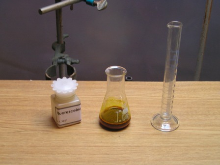
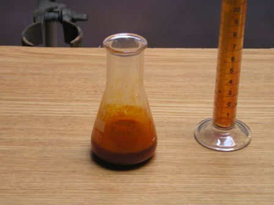
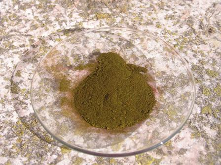
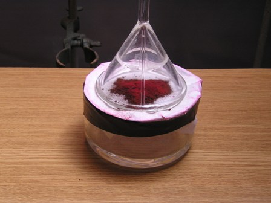
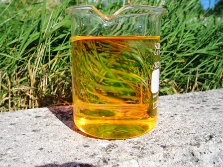

Mi ricordo che da ragazzo guardavo sempre con intimo sollievo (perchè non era capitato a me!) quelle pitturate di mercurocromo fatte senza economia che arrossavano braccia e gambe di qualche sventurato coetaneo feritosi nei vari modi in cui una volta giocando ci si feriva (oggi il mondo è cambiato anche in tal senso...).
Cos'era quella sostanza terribilmente e impietosamente rossa, che trasformava nell'aspetto una banale sbucciatura in una ferita da eroe di guerra?
Era appunto il mercurocromo (o merbromina), un composto organico antisettico contenente nella molecola il mercurio, ora poco o non più usato nonostante la tossicità esigua.
Perchè questa strana introduzione iniziale? Perchè oggi si andrà a preparare un parente stretto della merbromina, cioè il tetrabromoderivato della fluoresceina, ovvero l'eosina ed il suo sale di ammonio.
Anche il colore è il medesimo, un rosso vivo intenso, che si attacca alla pelle in modo estremamente tenace.
Materiali occorrenti:
- Fluoresceina
- Bromo
- Etanolo
- Ammoniaca
- Vetreria opportuna
La bromurazione della fluoresceina è facile e immediata, con ottima resa.
Non mi soffermo sulle procedure di sicurezza per l'alogenazione, comunque è opportuno muoversi al rallentatore quando si ha in mano la bottiglia di Br2 per portarla all'aperto o in luogo adatto a questi esperimenti... Con certi composti non si scherza. Ecco le reazioni


- Porre in una beuta da 25 ml 2 g di fluoresceina (ved. preparazione precedenta) ed aggiungere 10 ml di etanolo.Agitare bene la sospensione (la fluoresceina è poco solubile in quasi tutti i solventi) ed aggiungere cautamente goccia a goccia 1,5 ml (4,6 g) di bromo.
Quando se ne è aggiunto circa la metà o poco più la fluoresceina si scioglie perchè forma il dibromoderivato molto solubile in alcool, di colore rosso scuro.Continuando l'aggiunta comincia a precipitare il tetrabromoderivato, del medesimo colore.
Lasciare in riposo un paio d'ore, filtrare su buchner e lavare bene prima con poco etanolo poi con acqua. Seccare all'aria il prodotto di addizione eosina.etanolo.
Per ottenere eosina pura occorre far seccare in forno a 110° in modo da eliminare completamente l'etanolo.
L'eosina si presenta come una polvere rosso aranciato, completamente insolubile in acqua; presenta anch'essa una bella fluorescenza con toni verde rossastri, ma meno intensa rispetto alla fluoresceina. Ha un estremo potere colorante per la pelle (è un colorante cellulare usato in istologia!), ne basta una traccia per colorarla di rosso vivo. La tonalità è la stessa del vecchio mercurocromo, il quale non è altro che una diromofluoresceina con un gruppo -Hg-OH al posto del terzo atomo di bromo.
Per renderla solubile in acqua e vedere la fluorescenza si può trasformarla nel sale sodico, oppure, ancora più interessante, è l'esperimento che segue:

- Mettere in un cristallizzatore una ventina di ml di ammoniaca concentrata.
Coprire il cristallizzatore con un foglio di carta da filtro e fissarlo ai bordi con un elastico o con nastro adesivo. Sulla carta da filtro disporre uno straterello sottile di eosina, coprendola con un imbuto di vetro rovesciato.
L'ammoniaca gassosa investe per diffusione l'eosina, il colore scurisce quasi istantaneamente ed in un paio d'ore, mescolando ogni tanto, la trasformazione in eosinato d'ammonio sarà completa e per comoda via secca.


Questo composto si presenta come una polvere di un bel verde oliva scuro a riflessi metallici (la foto non rende il colore), di enorme potere colorante e solubile in acqua; tracce di esso impartiscono all'acqua la fuorescenza verde rossastra che si vede in foto, ed alle mani delle belle macchie rosse indelebili per qualche giorno!
